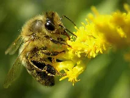
Abeille domestiquewiki-fr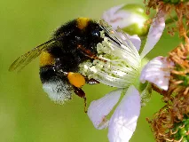
Bourdon terrestrewiki-fr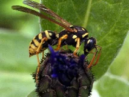
Guêpe communewiki-fr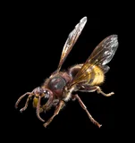
Frelon européenbing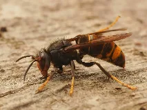
Frelon asiatiquewiki-fr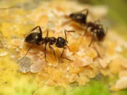
Fourmi noire des jardinswiki-fr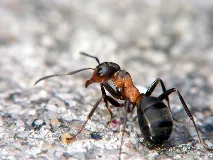
Fourmi rousse des boiswiki-fr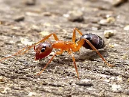
Fourmi charpentierewiki-fr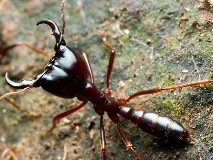
Fourmi légionnairewiki-fr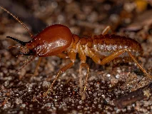
Termitewiki-fr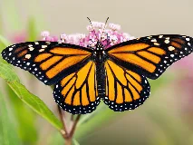
Papillon Monarquewiki-fr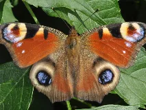
Paon-du-jourwiki-fr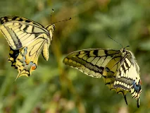
Machaonwiki-fr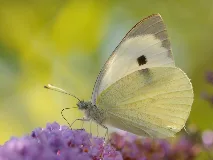
Piéride du chouwiki-fr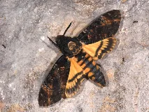
Sphinx tête de mortwiki-fr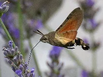
Sphinx colibriwiki-fr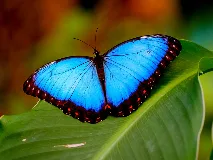
Morpho Bleuwiki-fr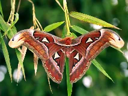
Papillon Atlaswiki-fr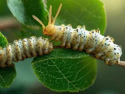
Ver à soiewiki-fr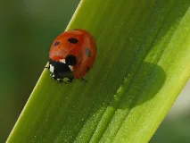
Coccinelle à sept pointswiki-fr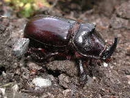
Scarabee rhinoceroswiki-fr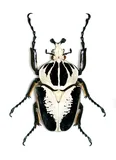
Scarabée goliathbing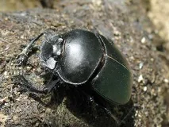
Scarabée sacréwiki-fr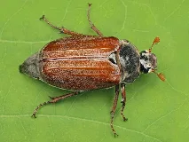
Hannetonwiki-fr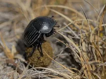
Bousierwiki-fr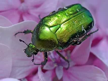
Cétoine doréewiki-fr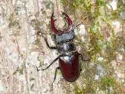
Lucane Cerf-Volantwiki-fr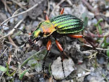
Carabe doréwiki-fr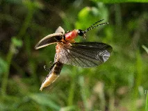
Luciolewiki-fr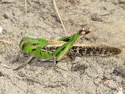
Criquet migrateurwiki-fr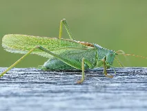
Sauterelle vertewiki-fr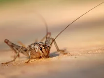
Grillon domestiquewiki-fr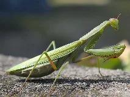
Mante religieusewiki-fr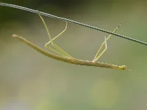
Phasme bâtonwiki-fr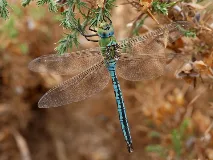
Libellule empereurwiki-fr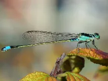
Demoisellewiki-fr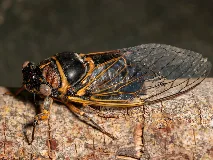
Cigale communewiki-fr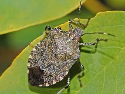
Punaise diaboliquewiki-fr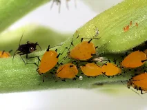
Puceronwiki-fr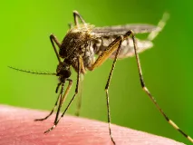
Moustique communwiki-fr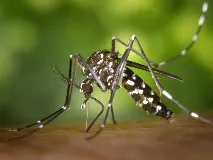
Moustique tigrewiki-fr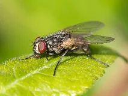
Mouche domestiquewiki-fr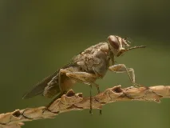
Mouche tsé-tséwiki-fr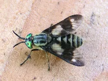
Taonwiki-fr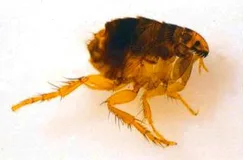
Puce du chatbing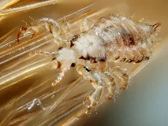
Pou de têtewiki-fr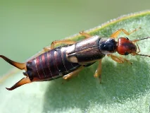
Perce oreillewiki-fr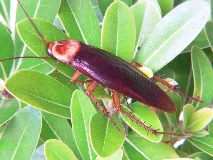
Blatte américainewiki-fr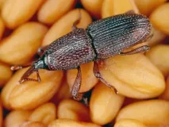
Charançon du bléwiki-fr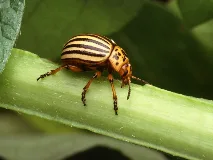
Doryphorewiki-fr